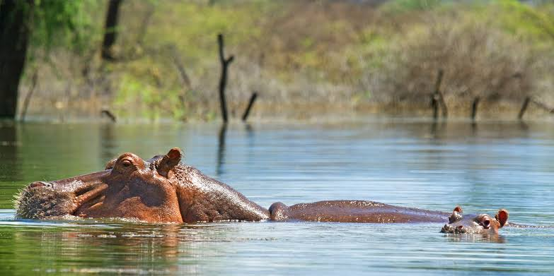

Lake Baringo
Lake Baringo is a fascinating national reserve situated in the remote west-central region of Kenya in a distance of 290 kilometers from Nairobi and 1000m above sea level, the conservation area is located in Baringo County. Lake Baringo is a less known lake when compared to its fellow rift valley lakes such as Lake Nakuru, Lake Naivasha, and Bogoria, though it is a hidden gem with breathtaking scenic views, abundant birdlife, islands, and animals. Lake Baringo is a great stopover while on a safari on the northern circuit tour in destinations like Samburu national reserve, Shaba and Buffalo Springs national parks.
Lake Baringo is surrounded by Marigat which is a main town and other smaller settlements of Kampi ya Samaki and Loruk
Tourist attractions in Lake Baringo

Lake Baringo is more than just a lake as consists of many tourists attractions making it a great tourist destination to visit while on a safari in Kenya, these attractions include:
Lake Baringo
Lake Baringo is a freshwater lake lieing in the northern edge of the Great Rift Valley covering an area of 220 square kilometers. Lake Baringo is part of the East African Rift system with Tugen hills, uplifted fault block of volcanic and metamorphic rocks in the west and Laikipia Escarpments in the East.
Lake Baringo is fed by 3 rivers that is river Molo, river Perkerra and river and has no outlet, this lake with Lake Naivasha are the only freshwater lakes in the rift valley. Lake Baringo is a great bird habitat with over 470 bird species including the flamingoes, pelicans, cormorants and fish eagles, the lake also features islands which are visited on a boat ride. Lake Baringo also consists of fish species such as tilapia, African catfish, marbled lungfish and many more.
Wildlife

Lake Baringo is a home to a reasonable population of wildlife and it is known for hosting the last remaining population of greater kudu in Kenya, these animals are shy in nature and they usually hide in thickets. Animals in Lake Baringo national park include impala, dik-dik, zebra, Grants gazelle, warthogs, hippos, crocodile, klipspringer, rock hyrax and many more.
Birdlife
Lake Baringo is a paradise for birders and a habitat to over 450 bird species. It is best place for birdwatching as it offers a unique experience to see birds whose habit is found especially at the banks of lake and in the islands and they include;

African fish eagle, Goliath heron,African open bill stork, African paradise flycatcher, violet wood hoopoe, Abyssinian scimitar bill, African wattled lapwing, Black-headed lapwing, Black-necked grebe, Black-tailed godwit, Cape teal, Darnauds barbet, Egyptian vulture, Golden-backed weaver, Greater painted-snipe, Grosbeak canary, Lesser Honeyguide, Narina trogon, Rufous chatterer, Rufous-crowned roller, Sombre nightjar, Southern Pochard, Steel-blue whydah, Temmincks stint, Verreauxs eagle, White-billed buffalo-weaver and many more .

Islands
Lake Baringo consists of 7 islands which attract numerous tourists for island exploration safari experience, these islands include Rongena, Samatian, Ol Kokwe, Parmolok, Gibraltor, Lokoros and Devils Island as explained below
Ol Kokwe Island
Ol Kokwe Island is the largest island in Lake Baringo sitting in the middle of the lake, the island is now an extinct volcano and a residence for the local Njemps people and it is on this island where Baringo island camp is found. Ol Kokwe island consists of hot springs and fumaroles which contain sulphur deposits.
.jpg)
Devils Island
The Devils Island is an interesting island with various myths, the local Njemps believe this island is a home of devils which explains its name. This island is said to feature howling sounds and blue flames that can be seen at night, according to the myths on this island the locals consider it the forbidden island and the locals are usually pleased with the tourists visiting the island risking to climb the rocks which is forbidden.
Gibraltor Island
Gibraltor Island is a small island in size and a great habitat for birds, the island is a home to the largest population of Goliath heron ever recorded in East Africa. The goliath heron is apparently the largest heron among the heron family and found of living around water source and this island is a perfect place to see these birds while in Lake Baringo.
Samatian Island

Samatian Island is a small green island, this island accommodates the Samatian island camp which offers accommodation to tourists visiting the lake and the park.
Lake Baringo also has smaller islands , unfortunately during rainy season these islands disappear and reappear when the water levels go down.
Best time to Lake Baringo
Lake Baringo is good to visit throughout the year because it generally experiences warm weather conditions throughout the year, Lake Baringo receives 2 rainy seasons in the period of April June and October December. According to the fact that the best experience is got in dry season the best time to visit the park is in dry season which is experienced in the period of July to September and January March.
Accommodation

There is a wide selection of hotels and lodges around Lake Baringo with numerous accommodation facilities offering bed and other services to tourists visiting the place for a safari.Baringo Tours we have partnered with local hotels and lodges to provide a range of accommodations options to suit different budgets and preferences at discounted rates.
We recommend staying in Baringo for 2 to 3 nights and add in a couple of other destinations too to your safari. Hotels and Lodges includes: Tumbili cliff lodge, Island camp lake Baringo, Lake Bogoria Spa resort, Rift valley resort, Soi safari lodge, Popo camp , Bush Baby Camp, Samatian Island and many more.
Dive deeper to read about each hotels
HOTELS AND CAMPS IN BARINGO
For Best Camping experience visitPopo Camp
3 Days Lake Baringo and Lake Bogoria Safari Overview
Day 1: Nairobi – Lake Baringo
Departure from Nairobi at around 6 am to lake Baringo. It is a 4-5hour drive. Arrive in lake Baringo at check in at your preferred lodge then lunch. In the Afternoon, we depart for Flamingo watch in lake Bogoria Game Reserve up to 6:00 pm.

You will also see greater Kudu and Hot springs. Arrive at the hotel at around 7:30 for supper and overnight.
Day 2: Lake Baringo Boat Riding and Giraffe Walk
Early Breakfast at around 6:00 am. Boat Riding in lake Baringo. We will see crocodiles, Hippos, warding birds and Fish eagle feeding. Boat tour to lake Baringo Hot springs in Kokwa Island. At the hot springs you will enjoy natural sauna, egg boiling and facial scrubbing. Thereafter we will proceed to Ruko Conservancy for Giraffes walk.
We will have lunch at around 2pm. Thereafter, you have free time to supper. At this time for those interested in fishing can enjoy the day or spend some time at the swimming pool.
Day 3: Lake Baringo – Nairobi
Breakfast in the morning then we will visit lake Baringo Snake Park. We will then go to Pokot community cultural tour.

We will be entertained with traditional songs and stories.
Departure from lake Baringo to Nairobi (Destination)
Included in the Safari Cost
Arrival & Departure airport transfers complementary to all our clients.
Transportation as per itinerary.
Accommodation per itinerary or similar with a request to all our clients.
Meals as per itinerary B=Breakfast, L=Lunch and D=Dinner.
Services literate English driver/guide.
Excursions & activities as per itinerary with a request
Recommended Mineral Water while on safari.
Excluded in the Safari Cost
Visas and related costs.
National park & game reserve entrance fees as per itinerary.
Personal Taxes.
Drinks, tips, laundry, telephone calls and other items of a personal nature.
International flights.
Optional excursions and activities not listed in the itinerary.